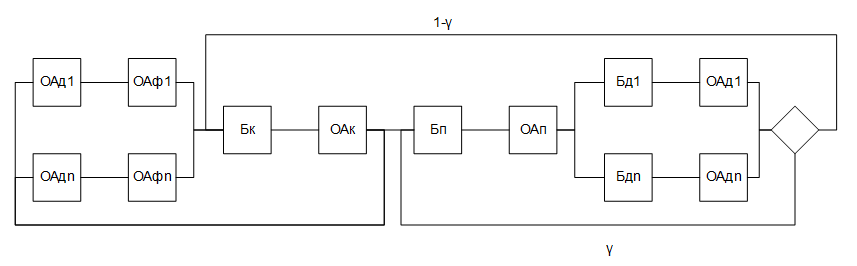

Общая схема моделируемой СОИ и условные обозначения

В схеме используются следующие обозначения:
- ОAДi - обслуживающий аппарат, имитирующий дообработку на i-той рабочей станции сети запроса от этой станции к серверу после обработки запроса на сервере;
- ОAфi - обслуживающий аппарат, имитирующий формирование запроса от i-той рабочей станции к серверу;
- Бк - буфер, имитирующий очередь запросов к каналу;
- ОAк - обслуживающий аппарат, имитирующий задержку при передаче данных через канал;
- Бп - буфер, имитирующий очередь запросов к процессорам;
- ОАn - обслуживающие аппараты, имитирующие работу процессоров;
- БДi - буфер, имитирующий очередь запросов к i-му диску;
- ОAДi - обслуживающий аппарат, имитирующий работу i-го диска;
- γ - вероятность обращения запроса к ЦП после обработки на диске. Обслуживание заявок во всех ОА подчиняется экспоненциальному закону.